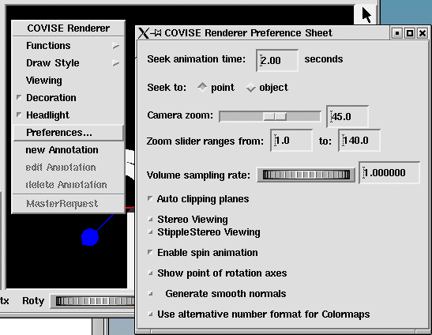

| To select your preferred defaults for the viewer area press the right mouse button on the viewer area and select Preferences... with the left mouse button. |
|  |
The Covise Renderer Preference Sheet allows you to
| Similar functions are provided by | |
| CutGeometry (Module) | 1 permanent plane with variable normal and a variable point on the plane (to be supplied as module parameters) |
| Clipping Plane (Renderer, menu item Viewing > Clipping Plane) | 1 switchable plane with variable normal and a variable point on the plane |
| Show point of rotation axes works in ViewMode only! |